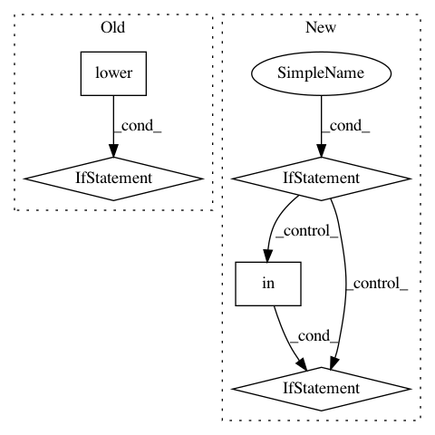

0bc1db58d82c2482bfac1e32a3a43cfd5a533da2,utils/google_utils.py,,attempt_download,#Any#,19
Before Change
def attempt_download(weights):
// Attempt to download pretrained weights if not found locally
weights = str(weights).strip().replace(""", "")
file = Path(weights).name.lower()
msg = weights + " missing, try downloading from https://github.com/ultralytics/yolov3/releases/"
response = requests.get("https://api.github.com/repos/ultralytics/yolov3/releases/latest").json() // github api
assets = [x["name"] for x in response["assets"]] // release assets ["yolov3.pt", "yolov3-spp.pt", "yolov3-tiny.pt"]
redundant = False // second download option
if file in assets and not os.path.isfile(weights):
try: // GitHub
tag = response["tag_name"] // i.e. "v1.0"
url = f"https://github.com/ultralytics/yolov3/releases/download/{tag}/{file}"
print("Downloading %s to %s..." % (url, weights))
torch.hub.download_url_to_file(url, weights)
assert os.path.exists(weights) and os.path.getsize(weights) > 1E6 // check
except Exception as e: // GCP
print("Download error: %s" % e)
assert redundant, "No secondary mirror"
url = "https://storage.googleapis.com/ultralytics/yolov3/ckpt/" + file
print("Downloading %s to %s..." % (url, weights))
r = os.system("curl -L %s -o %s" % (url, weights)) // torch.hub.download_url_to_file(url, weights)
finally:
if not (os.path.exists(weights) and os.path.getsize(weights) > 1E6): // check
os.remove(weights) if os.path.exists(weights) else None // remove partial downloads
print("ERROR: Download failure: %s" % msg)
print("")
return
def gdrive_download(id="16TiPfZj7htmTyhntwcZyEEAejOUxuT6m", name="tmp.zip"):
// Downloads a file from Google Drive. from utils.google_utils import *; gdrive_download()
t = time.time()
print("Downloading https://drive.google.com/uc?export=download&id=%s as %s... " % (id, name), end="")
After Change
// Attempt file download if does not exist
file = Path(str(file).strip().replace(""", "").lower())
if not file.exists():
response = requests.get("https://api.github.com/repos/ultralytics/yolov3/releases/latest").json() // github api
assets = [x["name"] for x in response["assets"]] // release assets ["yolov3.pt", "yolov3-spp.pt", ...]
name = file.name
if name in assets:
msg = f"{file} missing, try downloading from https://github.com/ultralytics/yolov3/releases/"
redundant = False // second download option
try: // GitHub
tag = response["tag_name"] // i.e. "v1.0"
url = f"https://github.com/ultralytics/yolov3/releases/download/{tag}/{name}"
print(f"Downloading {url} to {file}...")
torch.hub.download_url_to_file(url, file)
assert file.exists() and file.stat().st_size > 1E6 // check
except Exception as e: // GCP
print(f"Download error: {e}")
assert redundant, "No secondary mirror"
url = f"https://storage.googleapis.com/ultralytics/yolov3/ckpt/{name}"
print(f"Downloading {url} to {file}...")
os.system(f"curl -L {url} -o {file}") // torch.hub.download_url_to_file(url, weights)
finally:
if not file.exists() or file.stat().st_size < 1E6: // check
file.unlink(missing_ok=True) // remove partial downloads
print(f"ERROR: Download failure: {msg}")
In pattern: SUPERPATTERN
Frequency: 3
Non-data size: 5
Instances
Project Name: ultralytics/yolov3
Commit Name: 0bc1db58d82c2482bfac1e32a3a43cfd5a533da2
Time: 2021-01-10
Author: glenn.jocher@ultralytics.com
File Name: utils/google_utils.py
Class Name:
Method Name: attempt_download
Project Name: andresriancho/w3af
Commit Name: 5d0b89fa7644bdd51cb4615829cbd329898408a1
Time: 2019-06-07
Author: andres.riancho@gmail.com
File Name: w3af/plugins/audit/response_splitting.py
Class Name: response_splitting
Method Name: _header_was_injected
Project Name: stanfordnlp/stanza
Commit Name: 0cc7c20d37f76139f27ce171b1dd9289c922efbd
Time: 2019-12-18
Author: zyh@stanford.edu
File Name: stanfordnlp/models/ner/utils.py
Class Name:
Method Name: is_bio_scheme